App Hotel. Salón Habana
En el anterior topic se explica la reserva de clientes del Salón Habana, y dentro de esta nos centramos en los datos del cliente, en este caso hablaremos de la segunda parte, que son los datos de la reserva.
Para acceder a los datos de la reserva, debemos introducir primero los datos del cliente, tal y como hemos comentado en el topic anterior.
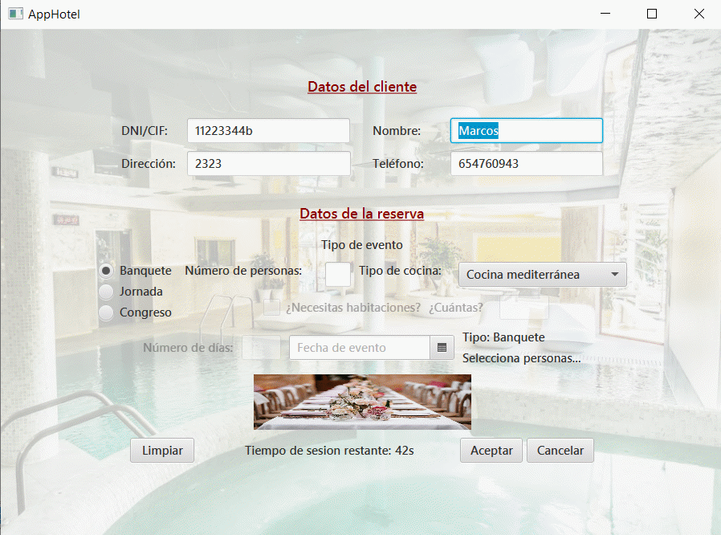
Nos centraremos en la parte de “Datos de la reserva”:
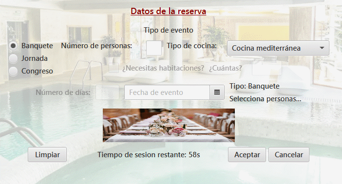
En esta parte podemos elegir tres tipos diferentes de reservas de salón, que son “Banquete”, “Jornada” y “Congreso”.
Debemos
elegir uno de estos tipos, y dependiendo de la reserva que escojamos
podremos insertar diferentes tipos de datos:
Si elegimos la reserva de “Banquete”:
Si elegimos la reserva de “Jornada”:
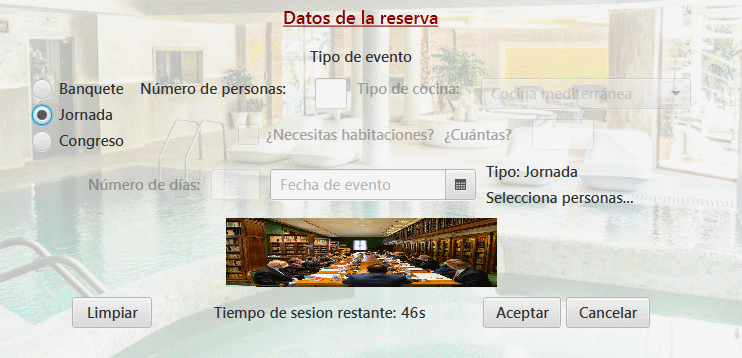
Si elegimos la reserva de “Congreso”:
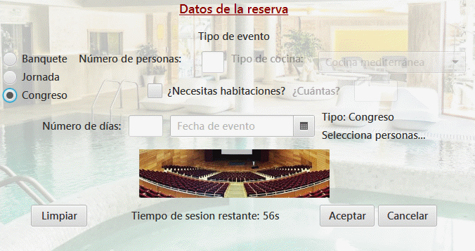
Dentro de la reserva de “Banquete”, tenemos disponible la opción para seleccionar el “Número de personas”, el “Tipo de cocina”, y la “fecha del evento”.
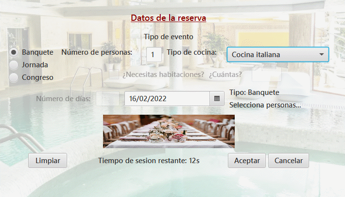
Dentro de la reserva de “Jornada”, podemos seleccionar el “Número de personas” y la “fecha del evento”.
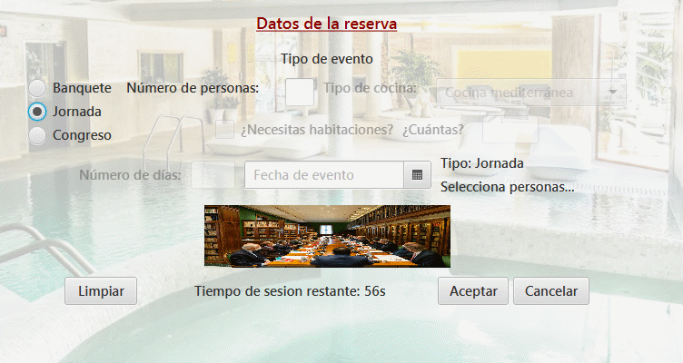
Dentro de la reserva de “Congreso”, podemos seleccionar el “Número de personas”, en este caso tenemos una casilla para marcar si necesitamos habitaciones, si necesitamos habitaciones marcamos la casilla,
y al marcar dicha casilla se nos habilita otra pestaña para indicar la cantidad de habitaciones que necesitamos.
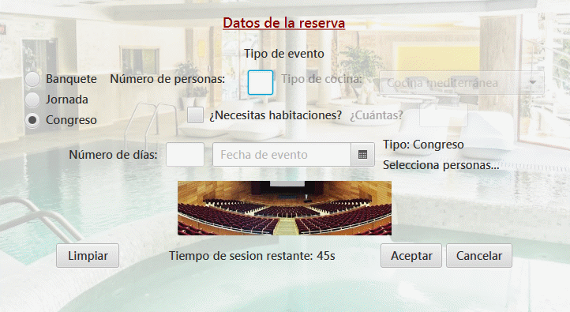
POSIBLES ERRORES A LA HORA DE INTRODUCIR LOS DATOS DE LA RESERVA:
Reserva de Banquete:
Dentro de la reserva de “Banquete” podemos tener los siguientes errores:
El número de personas solo pueden ser números:
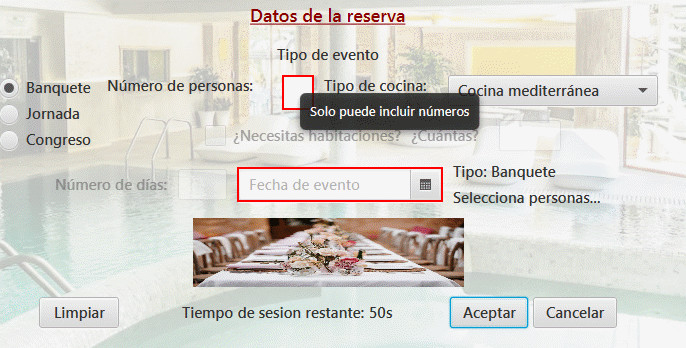
Debemos seleccionar una fecha para el evento, no puede estar vacío:
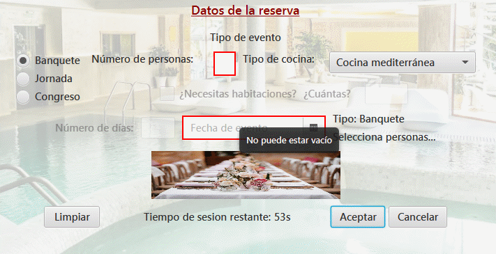
A la hora de seleccionar el tipo de cocina no podemos tener ningún error, ya que viene una cocina marcada por defecto, entonces no existe la posibilidad de que no seleccionemos un tipo de cocina.
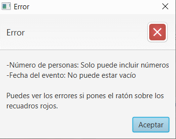
Reserva de Jornada:
Dentro de la reserva de “Jornada” podemos tener los siguientes errores:
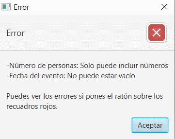
Al solo tener disponibles el número de personas y seleccionar la fecha del evento, los errores posibles son los mismos que en la reserva de Banquete.
Reserva de Congreso:
Dentro de la reserva de “Congreso”, pueden ocurrir los siguientes errores:
En este caso, la gran mayoría de los errores se comparten con Banquete y Congreso, pero en este caso se añade el “Número de días”, que necesitas introducir un número, y no admite otro carácter.
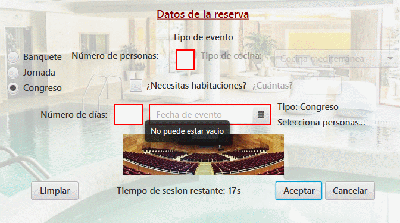
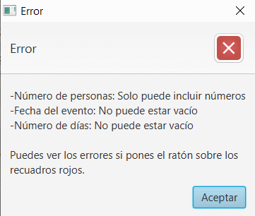